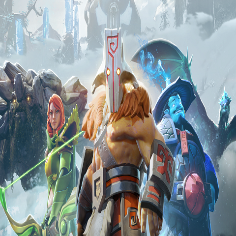

|  |
The International es un campeonato anual del videojuego Dota 2 patrocinado por la empresa desarrolladora de juegos Valve Corporation. El campeonato se enmarca dentro de los deportes electrónicos. En este torneo participan actualmente dieciocho equipos profesionales, 12 de ellos ingresando por invitación de Valve según los resultados de la serie de torneos Dota Pro Circuit de esa temporada, y los restantes 6 ingresando mediante calificaciones regionales, un puesto respectivamente para Norteamérica, Suramérica, el Sureste Asiático, China, Europa y la CEI. El campeón más reciente es OG, que es también el primer y único equipo en ganar más de un campeonato de The International, y de manera consecutiva.
El torneo comenzó con el lanzamiento de la versión beta de Dota 2 el 17 de agosto de 2011 en la Gamescom, con un pozo total de 1,6 millones de dólares y con un premio final de un millón de dólares. Posteriormente, se ha realizado una edición cada año, llegando a pasar los 34 millones de dólares en la edición de 2019, siendo el mayor premio jamás entregado en la historia de los videojuegos.
Desde la edición de 2013, la mayor parte del premio viene a estar financiado con base en los mismos jugadores y aficionados de Dota 2, ya que el 25% de sus compras en determinados «kits» que van a parar al premio final, con Valve colocando solo los 1.6 millones de dólares del premio base. Los jugadores que aportan comprando el «kit», reciben a cambio ciertas ventajas cosméticas, exclusivas y muy detalladas propias de la edición de The International de ese año, en función del tamaño del premio final, acumulándose a medida que crece. Los ganadores del campeonato reciben el Aegis of Champions en forma de trofeo. |
La primera aparición de Dota fue como un mapa para el juego Warcraft III: Reign of Chaos llamado Defense of the Ancients, que fue creado con el software Warcraft III World Editor. Este mapa fue abreviado a "DotA", originalmente fue creado por el usuario anónimo "Eul", que se basó en el mapa de StarCraft "Aeon of Strife".13 Cuando Blizzard Entertainment lanzó la expansión The Frozen Throne en 2003, Eul abandonó la edición del mapa y otros editores de mapas retomaron su trabajo por iniciativa propia, desarrollando diferentes versiones del mapa original, incluyendo nuevos héroes, artículos y diversas características. La versión más acogida por los jugadores fue "Dota: All Stars", desarrollado por Steve "Guinsoo" Feak, que incluyó en su versión características de otras variantes. Con la ayuda de un miembro de su clan, Steve "Pendragon" Mescon, una fuente de recursos para Dota así como un centro para la comunidad fueron creados en el sitio web dota-allstars.com. En 2005, el cargo de Feak como líder de desarrollo y diseño le fue cedido a IceFrog, otro miembro de su clan. |